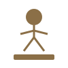
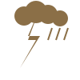
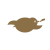
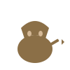

He kutsuvat sitä Suurhämäräksi - aikaa, jolloin maailmassa ei ole päivää eikä yötä - vaan jotain siltä väliltä. Hetkeä, jolloin vanhat voimat heräävät ja tulevaisuus vaipuu hiljaisuuteen.
Muinaisissa profetioissa kerrotaan, että Suurhämärä ei ole ajanjakso - se on tila, jossa todellisuuden säännöt horjuvat. Liittoumat muuttuvat varjoiksi, lupaukset haalistuvat, ja kansojen kohtalo riippuu hetkestä, jolloin näkymättömät voimat vetävät lankoja.
Vanhat viisaat sanovat, että Suurhämärässä mikään ei ole varmaa. Ystävä voi olla vihollinen. Rauha voi olla sotaa. Ja voitto voi olla vain hetki ennen pimeyttä.
Toiset väittävät, että Suurhämärä on sykli - ikuinen kierre, joka toistuu aina kun sivilisaatiot kohoavat tarpeeksi korkealle nähdäkseen horisontin. Joka kerta kun Suurhämärä palaa, maailma muuttuu.
Nyt suurhämärä laskeutuu viidettä kertaa. Kansakunnat nousevat pimeydestä, johtajat kutsutaan valtaistuimilleen, ja maailman kohtalo riippuu jälleen Nerdcomin neuvoston päätöksistä. Muinaiset vihollisuudet heräävät, liittoumat murenevat, ja diplomaattisten sanojen takana piilee terän kiilto. Onko Nerdcom viimeinen, paras toivo rauhalle? Valinta on teidän.
Kauan ennen neuvoston syntyä, muinaiset näkijät kirjoittivat pergamenteille sanat, jotka ovat kulkeneet sukupolvelta toiselle. Näitä sanoja ei ymmärretä ennen kuin ne täyttyvät. Jotkut sanovat, että ennustukset eivät kerro tulevaisuutta - ne luovat sen.
Suurhämärän Viides Sykli seuraa samaa kaavaa kuin aikaisemmat: seitsemän merkkiä, seitsemän tapahtumaa, seitsemän käännettä kohtalon pyörässä. Kun viimeinen merkki täyttyy, Suurhämärä päättyy - ja uusi maailma syntyy tuhkan seasta.
Nämä ovat Seitsemän Ennustusta.
1 Kun Suurhämärä alkaa, yksi kansakunta on uhrattava. Sen tuho on merkki muille: aika on tullut. Veri maahan, lehdet tuuleen. Ensimmäinen valtakunta kaatuu, mutta sen sielu ei kuole - se vain muuttaa muotoaan.
2 Kylmässä ja pimeydessä nukkuu voima, joka odottaa aikaansa. Kun Suurhämärä syvenee, pohjoinen herää. Jää sulaa, maa vapautuu, ja se mikä oli unohdettu, nousee uudelleen. Pohjoinen ei pyydä lupaa - se vain ottaa.
3 Ennen eristys, nyt yhteys. Meret eivät enää erota, vaan yhdistävät. Laivat purjehtivat, suurlähettiläät saapuvat, ja sanojen kautta rakentuvat sillat - tai palavat. Kun mantereet yhdistyvät, mikään ei ole enää entisensä.
4 Vallan oikea muoto ei istu valtaistuimilla eikä marssi lippujen alla. Se liikkuu hiljaa, näkymättömänä, kuiskaten korviin ja siirtäen painoja salaa. Kun aamu koittaa, maailma on muuttunut - mutta kukaan ei tiedä milloin, missä tai kenen toimesta.
5 Kaikki salattu tulee ilmi. Maskit putoavat, liittoumat näyttävät todellisen luonteensa, ja voima paljastaa itsensä. Tämä on hetki, jolloin kansakunnat näkevät toisiaan ensimmäistä kertaa selvästi - ja pelkäävät näkemäänsä.
6 Maa järisee, tulivuoret heräävät, meret nousevat, ja taivas avautuu. Luonto ei katso sivusta - se tuomitsee kaikki tasapuolisesti. Tuhosta nousee joko vahvempana tai ei ollenkaan. Tämä on koe, jolta kukaan ei voi välttyä.
7 Kun kuusi merkkiä on täyttynyt, seitsemäs tulee väistämättä. Yksi voima nousee muiden yläpuolelle. Yksi visio toteutuu. Yksi tie johtaa aamunkoittoon, ja muut katoavat pimeyyteen. Suurhämärä päättyy - mutta onko se loppu vai vain uuden alku?
8 Näin on kirjoitettu, näin tapahtukoon, näin Suurhämärä toimii.
Siinä missä aurinko nukkuu Missä kuu ei herää koskaan Laskeutui Suurhämärä viides Nerdcomin neuvoston ylle.
Ensimmäisenä nousi Kreikka Pericles puheissaan kaunis Sanoissaan rauhan laulaja Teoissaan miekan heiluttaja.
Hän lausui Gallian kuningattarelle: "Yhdeksän laattaa minun valtani; yhdeksän laattaa vaadin tyhjiksi, tai lojaalisuus syö kansasi."
Mutta ylpeä oli Frankin kuningatar Seitsemään laattaan kaupunkinsa rakensi Kolmeen kaupunkiin vahvuutensa pani Kreikan rajoille haasteensa heitti.
Niin nousi faalangi savesta Keihäät kiilsivät aamunkoitossa Kolme kaupunkia kaatui Ranska vajosi tyhjyyteen.
"Lojaalisuus Pariisissa sata!" Näin Kreikka lauloi voitostaan Mutta vanhin viisas kuiskasi: "Voitto joka nousee verestä, kantaa siemenen omasta tuhostaan."
Pelin varhaisessa hämärässä, kun ensimmäiset kaupungit kohosivat savannien laidoille, Kreikka lähetti julistuksen, jonka sanat leimasivat koko kampanjan ilmapiirin: « Jos Ranska rakentaa tai valtaa kaupungin yhdeksän heksan päässä yhdestäkään minun kaupungistani — tai jos saan pienimmänkään hajun loyaltyn nakertamisesta — niin silloin jommankumman kampanja päättyy nopeasti. Ihan vaan tiedoksi. » Ranska vastasi rauhallisella äänellä: se ei voisi sijoittaa kaupunkia muualle kuin alle yhdeksän heksan päähän — pohjoista tundraa oli joka ilmansuunnassa, eikä settlereitä voi laittaa mereen. Kreikka ei hellittänyt. Se lausui: « Kreikkalaiset keskittyvät mieluusti teatteriin ja filosofiaan, mutta ovat valmiit tarpeen vaatiessa Areksen kentälle. » Saksa seurasi tätä kaikkea sivusta ja esitti ainoastaan yhden kommentin, joka on jäänyt historiakirjoihin: « Bisse ja popcornit tarvittaisiin kun tätä trash talkia seuraa. »
Neljän kansakunnan joukossa oli yksi, jonka kohtalo oli ankarin alkumatkalla. Saksa oli sijoittanut pääkaupunkinsa paikkaan, jota peli itse oli suositellut. Maa ei kasvanut viljaa. Pohjoisessa laajeni tundra, jossa ei laula lintu eikä kasva puu. Ja barbaarit tulivat. Saksa kirjasi kärsimyksensä lyhyesti: « Hemmetin barbaarit sotkee hyvän laajentumisen. » Sen tiedustelijat löydettiin barbaarien keihästämänä ennen kuin olivat ehtineet kartoittaa edes omaa synnyinseutuaan. Metsäkylien bonukset, joita muut korjasivat, jäivät Saksalta saamatta. Tulivuori purkautui lähellä. Kuivuus vuorotteli tulvien kanssa. Inkat uhkasivat etelästä vuorten suojista, ja tie niiden kaupunkeihin kulki rotkojen läpi, joissa ei voi hyökätä eikä kiertää. Lopulta Saksa totesi lakonisesti: « Paska kartta. » Näissä kahdessa sanassa oli enemmän pelin historiaa kuin monissa pitkissä puheissa.
VIRALLINEN TIEDOTE UNKARIN ULKOMINISTERIÖSTÄ Unkari kiistää jyrkästi väitteet vakoilusta tai rikollisesta toiminnasta. Spekuloitu kyseinen henkilö on mahdollisesti kulttuurintutkija, joka on toiminut itsenäisesti, riippumattomasti ja ilman virallista mandaattia. Unkari arvostaa kaikkien maiden kulttuuriperintöä, ja haluaa ylläpitää - nyt ja jatkossa - hyviä diplomaattisia suhteita kaikkiin valtioihin. Toivomme että Kreikka lähettää kyseisen henkilön Unkariin jotta voimme kuulustella häntä suoraan ja rankaista tilanteeseen sopivalla tavalla.
Kahdeksan vuoroa, kahdeksan kohtalon hetkeä kun kansojen kohtalo punnitaan. Perikleen oppilaat lausuvat runoja, Platonin akatemia avaa ovensa. Hammurabin lait seisovat vanhurskaana, mutta oikeudesta ei voittoa synny. Saksan koneet pauhaavat ja savuavat, teollisuus kasvaa, mutta kulttuuri vaipuu. Unkarin nuolet viuhuvat stepillä, mutta sotavaunuilla ei valloita sydämiä. Kahdeksan vuoroa - Ateenan loisto kutsuu, teatterit, temppelit, museot hohtavat. Turistit pakenevat muista maista, Kreikan kulttuuri nielee kaiken.
Kovin on karua maata saanut kuokkia täällä idässä - missä vilja ei kasva eikä linnut laula. Norja ja barbaarit on ollu alituisena kiusana ja tekoälyn virheitä maksellaan korkojen kera. Mutta niin vain tullaan ja kurotaan kaulaa Kreikkaan - tuohon kehittyneeseen ja kauniiseen kulttuuriin - joka näyttää kahmineen aimo kauhallisen mielen ruokaa ja sivistystä. Niin näyttää myös Kreikan sotilasmahti kasvavan; liekkö avustamassa Sumeriaa vai hyljännyt kulttuurin ja suunnittelemassa jotain suurempaa?!
Voi Fredrikiä, tuota kurjuuden kruunaamaa! Hänen valtakuntansa on eloton erämaa, jossa nälkäinen kansa kaluaa kiveä viljan sijasta. Vuosikausien ajan barbaarien kirveet pilkkoivat hänen toivonsa, ja se vähä, mikä jäi jäljelle, on nyt murentumassa mahtavan Kreikan varjon alle. Maailman mahtavin keisari on kutistunut pelkäksi varjoksi, joka joutuu nöyristelemään marmoripalatsien loistossa, samalla kun hänen oma kansansa hukkuu mutaan ja puutteeseen. Kurjuuden huipumaa, jossa jokainen aamu on vain uusi luku kärsimyksen historiassa.
Pelin varhaisessa hämärässä, kun kirjoitustaidot olivat vielä kehittymättä ja ensimmäiset kaupungit kohosivat savannien laidoille, Pericles lähetti julistuksen, jonka sanat leimasivat koko kampanjan ilmapiirin. Hän kirjoitti, ja hänen sanansa kajavat edelleen: « Jos Eleanor rakentaa tai valtaa kaupungin yhdeksän heksan päässä yhdestäkään minun kaupungistani, tai jos saan pienimmänkään hajun että yrität nakertaa minun kaupunkieni loyaltya, niin silloin jommankumman kampanja päättyy nopeasti. Ihan vaan tiedoksi. » Kirjuri, joka tuolloin oli vielä Ranska, vastasi rauhallisella äänellä: hän ei voisi sijoittaa kaupunkia muualle kuin alle yhdeksän heksan päähän — pohjoista tundraa oli joka ilmansuunnassa, eikä settlereitä voi laittaa mereen. Mutta Pericles ei hellittänyt. Hän lausui: « Kreikkalaiset keskittyvät mieluusti teatteriin ja filosofiaan, mutta ovat valmiit tarpeen vaatiessa Areksen kentälle. » Saksa seurasi tätä kaikkea sivusta ja esitti ainoastaan yhden lausahduksen, joka on jäänyt historiakirjoihin: « Bisse ja popcornit tarvittaisiin kun tätä trash talkia seuraa. »
Voi tuota kurjuuden kruunaamaa valtakuntaa! Sen maat ovat eloton erämaa, jossa nälkäinen kansa kaluaa kiveä viljan sijasta. Vuosikausien ajan barbaarien kirveet pilkkoivat toivon, ja se vähä mikä jäi jäljelle, on nyt murentumassa mahtavan Kreikan varjon alle. Maailman mahtavin keisari on kutistunut pelkäksi varjoksi, joka joutuu nöyristelemään marmoripalatsien loistossa, samalla kun hänen oma kansansa hukkuu mutaan ja puutteeseen.
Sumeria — se joka kantoi Gilgameshin nimeä ja vanhaa laulua — kärsi Japanin aggressiivisuudesta koko kampanjan ajan. Japanin munkit kävelivät rajoja myöten, sen buddhalaisuus hiipi kaupunkeihin kuin sumu, ja nyt se uhkasi vaikutusvallalla ottaa yhden Sumerian kaupungeista. Kreikka oli jo varoittanut omien kokemustensa pohjalta: « Japani on viemässä minulta yhtä kaupunkia vaikutusvallalla. Jos se tapahtuu, niin Japania ei välttämättä pitkään ole enää pelissä. » Se sanottiin kevyesti, mutta tarkoitettiin vakavasti. Suurhämärässä kevyet sanat kantavat raskaan merkityksen. Saksa huusi rohkaisua: « Gilgamesh — pystyt siihen — alista Japani! » « Gilgachad näyttää dorkalle Palan. » Tämä jäi sotaraportteihin mainintana, jonka merkitys avautuu vain niille, jotka tuntevat muinaiset kirjoitukset.
Sota pitkittyi. Sumeria pyysi apua Kreikalta — joka oli aiemmin tarjonnut sitä. Mutta Kreikka asui kaukana, ja se alkoi laskella grievance-taakkoja ja casus bellien kriteerejä pitkään ja hartaasti. « Ensin pitää tehdä viiden vuoron denounce, sitten voidaan katsoa... » Sumeria tiivisti tilanteen armottomasti: « Tämä on siis kreikkalaisten tapa — ensin ollaan kovasti, että tullaan apuun jos on tarvetta. Mutta tosi paikan tullessa eteen jänistetään karkuun. » Unkari — jonka oma maa sijaitsi toisella mantereella Norjan ikeen alla — lähetti henkistä tukea: « Täällä ollaan Norjan ikeen alla ja valtameri erottaa. Vähän vaikea tässä hetkessä revetä mihinkään avuksi. » Saksa, sivusta seuraava, pohdiskeli: « Bromance-voimat käytössä? Vai onko Unkari vaan henkinen supportti? » Sumeria teki lopulta rauhan Japanin kanssa ehdoilla, jotka eivät olleet kunniakkaat. Kaupungit alkoivat siirtyä takaisin Japanille. Sumeria myönsi: « Kyllästyin siihen. Nyt kaupungit siirtyy pikkuhiljaa japseille. Tuhatvuotinen sota oli päättynyt. Uuvutus oli voittanut.
Kun suursodat olivat rauhoittuneet ja kansakunnat olivat löytäneet paikkansa maailmankartalta, Kreikka kääntyi kulttuurin aseeseensa: rokkibändeihin. Se rakensi niitä yksi kerrallaan, antoi niille nimet, lähetti ne vieraille mailleille. Mutta bändit kuolivat. Yksi keikan jälkeen, toinen kahden. Kreikka suhtautui tähän filosofisesti: « Sex, drugs and rock n roll vaatii veronsa. » Yksi bändi selviytyi pitkälle. Se saavutti melkein kuolemattomuuden tason. Ja sitten se kuoli heti. Tätä tragiikkaa ei voi kuvata paremmin sanoin — se on elämä sellaisena kuin se on.
Tässä kohtaa on syytä kirjata eräs tapahtuma, josta ei ole täyttä selvyyttä mutta jonka jäljet näkyvät yhä. Unkarin pääkaupungissa liikkui pitkään henkilö, jonka identiteetti ei selvinnyt tavallisille vartijoille. Hän istui kauppatorilla, tutki rakennuksia, kirjasi ylös tuotantolukuja. Kuvernööri raportoi, että tuntematon henkilö poistui aina ennen kuin vartijat ehtivät kysellä. Unkari ei koskaan saanut tätä henkilöä kiinni. Pääkaupungin strategiset tiedot — tuotanto, armeijakoko, infrastruktuuri — olivat tämän jälkeen yhden tahon tiedossa. Kenen käyttöön tieto meni, jäi virallisesti selvittämättä. Historia ei syytä ketään nimeltä. Historia vain kirjaa, mitä tapahtui.
Kampanja kesti marraskuusta helmikuuhun. Talvi tuli ja meni. Settlerit hukkuivat jokiin. Barbaarit tulivat pohjoisesta. Kongressivuorot olivat tyhjiä seremonioita joissa kukaan ei äänestänyt mistään merkittävästä. Vuoroja odoteltiin myöhään yöhön. Peli jumitti ja vuoro piti lähettää uudelleen. «Dodih» tarkoitti, että vuoro oli tehty. Tämä ymmärrettiin vasta kolmannen kerran jälkeen. Mutta he pelasivat. He pelasivat yöllä, lomalla, kesken reissujen - lauantaiaamuisin. He pelasivat, koska kohtalo oli saavutettava. Kreikka voitti kulttuurivoiton. Se ei tullut miekalla eikä valtauksella. Se tuli teattereina ja temppeleinä, museona ja musiikkina, turisteina jotka halusivat nähdä sen, mitä Kreikka oli rakentanut. Kreikka ei valloittanut — se vakuutti. Se ei tuhonnut — se loi. Ehkäpä se on paras voitto kaikista: ei se, jonka ottaa väkisin, vaan se, jonka muut antavat vapaaehtoisesti.
Kreikka: Kreikka suunnitteli joka kaupungin. Kreikka opiskeli muinaisia strategioita ja voitti. Kreikan sielu, joka sanoi filosofoinnin olevan tärkeämpää kuin miekan. Sumeria: Se kävi tuhatvuotisen sodan Japania vastaan ja hävisi taktikoinnissa. Se pelasi kunniakkaan pelin. Se päivitti ajurinsa vasta kun ongelma oli jo viikon vanha. Näin ovat asiat. Saksa: Se asetti pääkaupunkinsa paikkaan jota peli suositteli. Ruoka loppui, barbaarit tulivat, Inkat uhkasivat vuorten suojista. Saksa pelasi fiilispohjalta loppuun asti, katkeruutta keräämättä — vaikka eniten sillä olisi ollut aihetta. Unkari: Unkari jumittui hallinnolliseen virheeseen. Unkari nousi uudelleen mutta ei ehtinyt saavuttaa kulttuurin kukoistusta ajoissa.
Kirjuri istuu nyt hiljaisessa huoneessa, kun kaikki on ohi. Kreikka voitti. Unkari tuli toiseksi. Saksa ja Sumeria pelasivat loppuun kunniakkaasti. Tekoälyt — Norja, Japani, Inka — toimivat kuten tekoälyt toimivat:
arvaamattomasti, ärsyttävästi, puolueettomasti pahuudessaan.
Nyt voidaan kertoa, mitä ennustukset todella tarkoittivat.
«Ensimmäinen valtakunta kaatuu»
— tämä ei tarkoittanut Ranskan lankeamista barbaarien Kreikan käsiin, vaan Unkaria itse: se kuoli hallinnolliseen virheeseen ennen kuin ensimmäinen armeija oli marssinut. Se nousi uudelleen. Se oli jo ihme sinänsä.
«Pohjoinen voima herää»
— tämä oli Norjan tekoäly, joka kiusasi Unkaria koko kampanjan. Meri erotti, vuoret sulkivat. Mutta Norja ei koskaan voittanut, sillä voitto ei ollut sen kohtalo.
«Varjot liikkuvat»
— tämä oli Kreikan rokkibändit, jotka liikkuivat näkymättöminä muiden kansakuntien sydämissä ja veivät turistit yksi kerrallaan, kuten varjot vievät valon. Tai sitten se oli se yksi tuntematon henkilö Unkarin pääkaupungissa. Varjot liikkuvat monessa muodossa. tjsp emmä tiedä...
Kuulkaa kuinka koodi syntyi, miten vuoro tuli tehdyksi, miten kehittäjät keksi pelien pilveen pistämisen. Nousi mies tietokonehen, sormet näppäimillä soipi, kirjoitti koodia kovaa, palvelinta pystytti. Ei se tavalline mies oo, ei se suotta suuria tee — hän on jumal jumalista, maagi maagien seassa. Kun neljä naksutteli vuoroja viikonlopun yli, kone kantoi, pilvi piti, vuoro tallennettiin tarkoin. Sumeria sumeni syömingeissä, Saksa kippisteli olusilla, Ranska liehitteli rajalla — kaikki koodi kannatteli. Kun me bugit bugasimme, save ei mennyt, peli jumitti, kehittäjä vastasi foorumilla: *"Teethän nyt liian vaikeasti."* Viisas oli, ylijumala, näki meidän näpräyksen, korjasi sen käden käänteessä ilman palkkaa, puhtaasta intohimosta. Patreoniin pantiin markka, sydän lämpeni sen verran — pienet lahjat suurille jumalille on tapamme kiittää heitä. Laulakaa nyt, laulajaiset, ylistäkää ylläpitäjää! Ilman häntä ei ois peliä, ei kronikkaa, ei Kreikan voittoa.
404

Democracy
Disaster
Peace
Spy